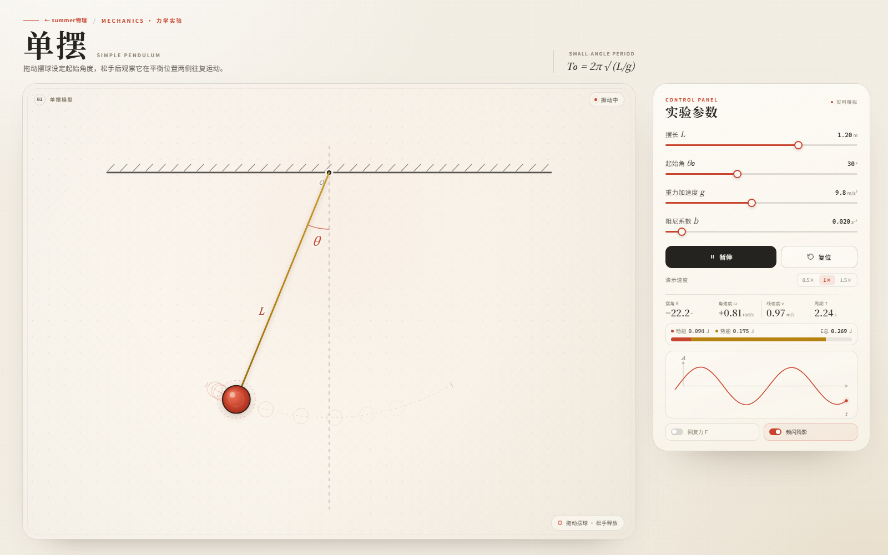
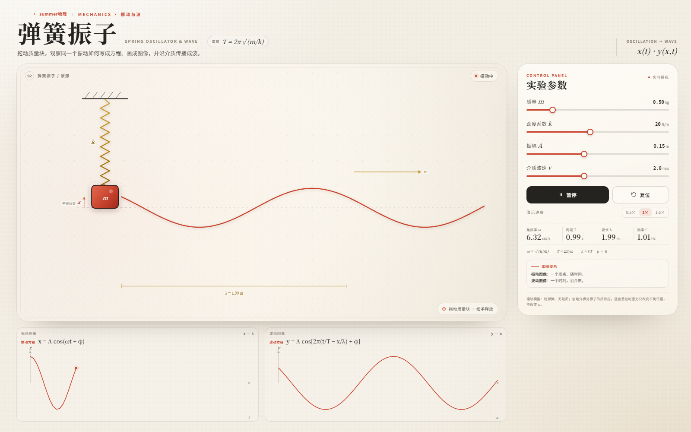
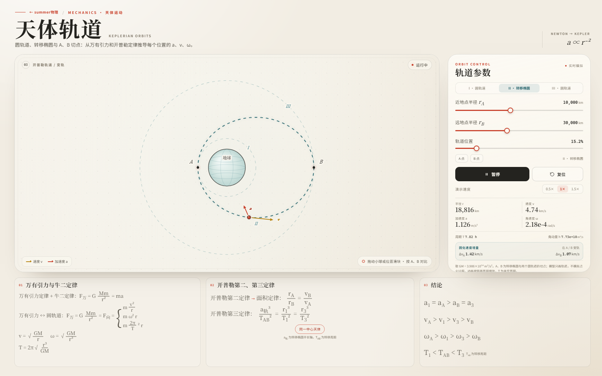
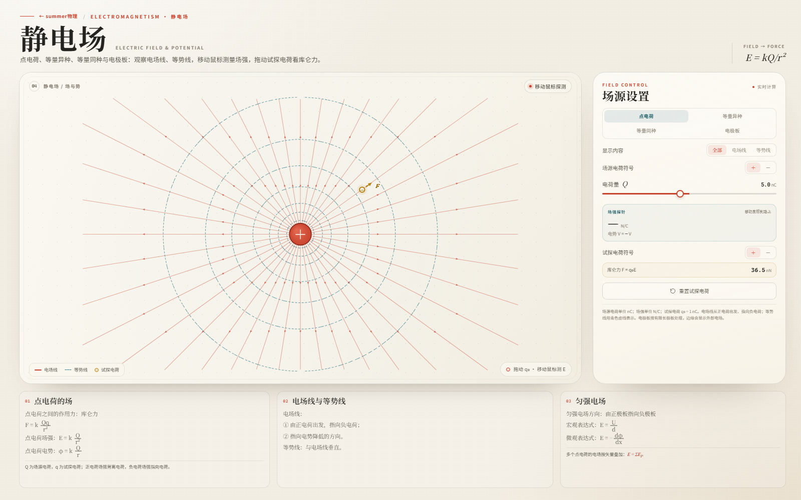
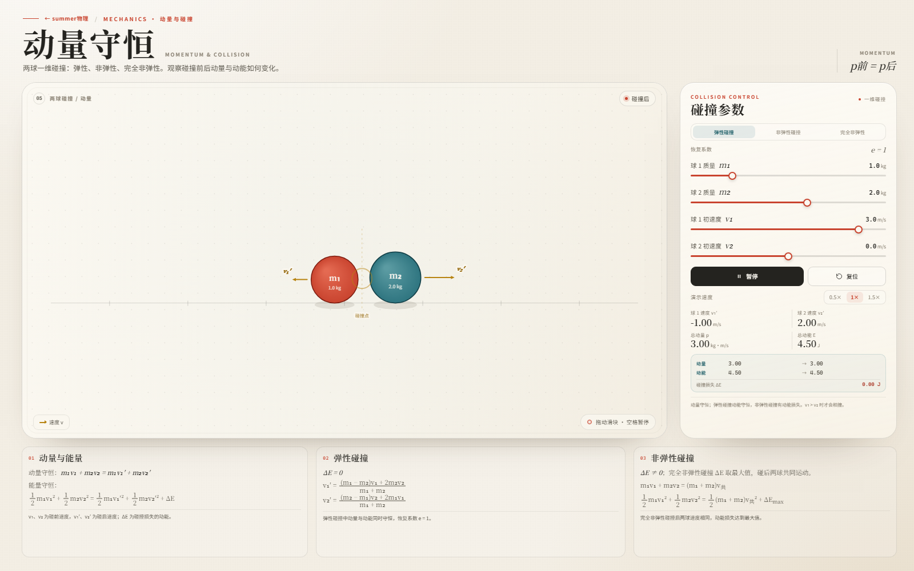

01INTERACTIVE PHYSICS · 可操控物理模型
让公式动起来。
summer物理 把课本里的物理模型，做成可以拖动、调参、实时观察的交互实验。不是看一段动画，而是亲手改变它。
05可交互模型
04可调实验参数
实时物理计算
LIVE PREVIEW
θ +30.0°
SIMPLE PENDULUM
单摆 · 点击进入
进入模型 ↗
L = 1.20 m · T ≈ 2.23 s
01 / SIMPLE PENDULUM
LIBRARY · 模型库
从一条规律开始。
每个模型都是一个可以直接打开的交互页面。拖动、调参、观察，公式不再停在纸面上。

02
03天体轨道
拖动小球到任意位置，比较加速度、速度与角速度；观察从内侧圆轨道经转移椭圆抵达外圆轨道的全过程，并用开普勒定律解释 A、B 两点。
- 拖动小球
- 圆轨道与转移椭圆
- A、B 切点对比
- 开普勒定律

04
05
接下来
- 平抛运动
- 磁场与洛伦兹力
- 圆周运动
- 机械波
APPROACH · 设计原则
不是演示，是实验。
模型的价值不在于好看，而在于你改变一个量之后，它能诚实地回应。
可操控
拖动对象、拉动滑杆、暂停和复位。每一个参数都应该能改变，而不是只沿着一条预设动画播放。
真物理
非线性方程、精确周期、阻尼耗散。动画服从计算，而不是先画好动画再补公式。
纸感极简
米白、墨线、红与金。把视觉噪音降到最低，让注意力留在物理本身。
ABOUT · 关于
summer物理
一个持续生长的交互物理模型库。为课堂演示，也为一个人在屏幕前把一个问题想明白。这里没有只能观看的动画，只有可以动手的实验。